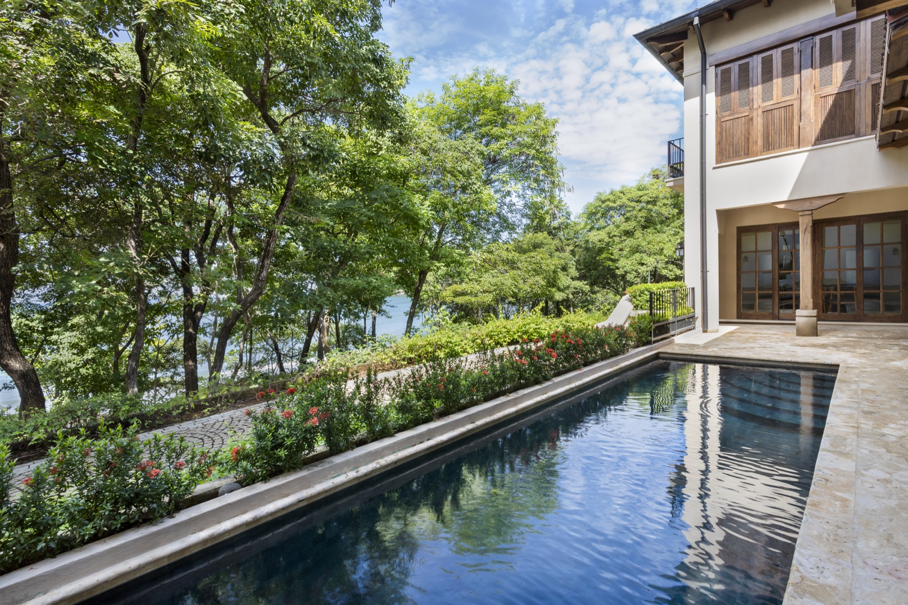

Las Catalinas, Guanacaste, Costa Rica
Casa Los Monos
Custom House · 350 m²
A contrasting cream-and-brown palette references Guanacaste’s white-faced capuchin monkeys. An enfilade arrangement of the living and dining spaces gives every room a shared view to the Pacific Ocean, while the upper floor carves out a studio apartment for short-term rental. The traditional colonial courtyard is reinterpreted as a pool terrace.
View project